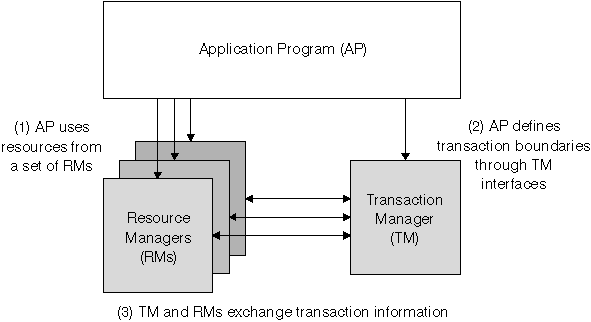
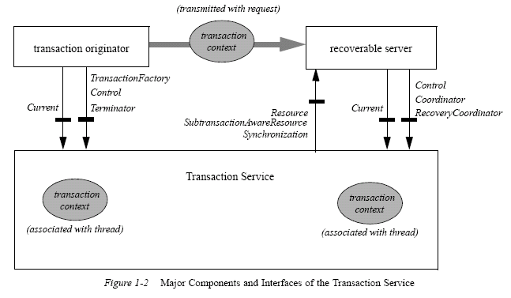
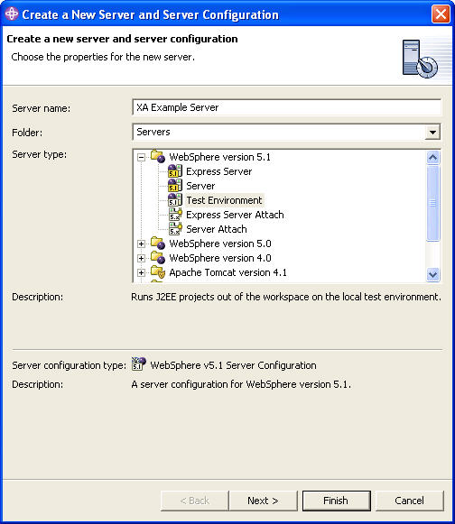
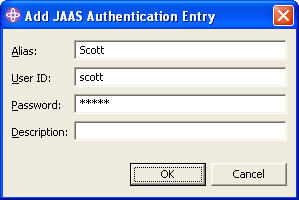
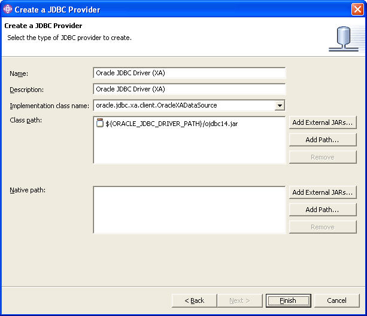
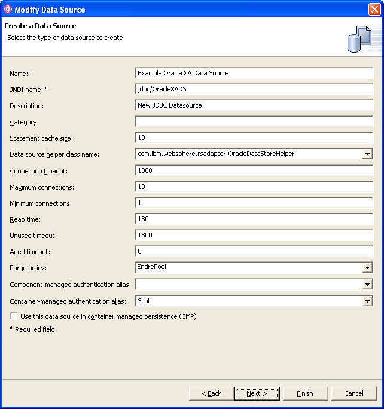
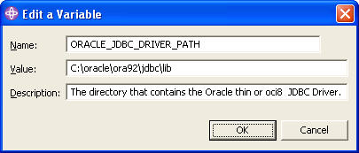
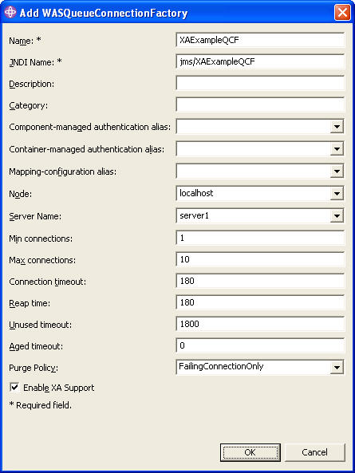
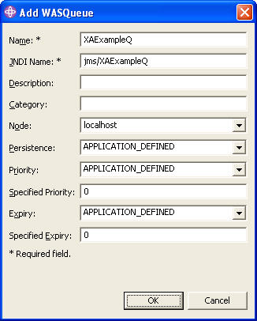
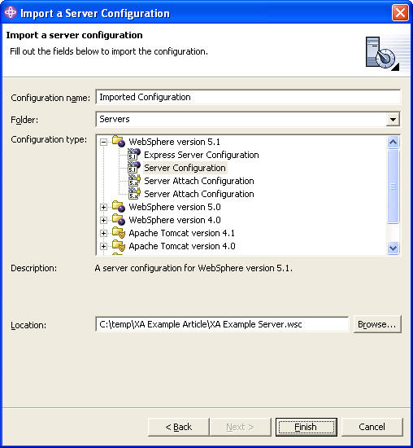

Level: Intermediate Bobby Woolf (bwoolf@us.ibm.com), Consulting I/T Specialist, IBM Raleigh Lab, Research Triangle Park, North Carolina
01 Jun 2004 This
article describes distributed transactions and shows you how to
configure a WebSphere Studio Application Developer test server with XA
resources for DB2, Oracle, and JMS that can be used together in a
distributed transaction. The article describes an example session bean
that updates both databases and sends a JMS message, all in the same
transaction. The Oracle database must also be configured to support XA
transactions, so the article shows the Java exceptions that occur when
it is not configured properly, and how to fix these problems.
 | |
Get the products and tools used in this article
If you are a developerWorks subscriber, you have a single user license to use
WebSphere® Studio Application Developer (and other editions of WebSphere Studio),
WebSphere Application Server, and other DB2®, Lotus®, Rational®, Tivoli®, and WebSphere products
-- including the Eclipse-based WebSphere Studio IDE -- to develop, test, evaluate, and demonstrate your applications.
If you are not a subscriber, you can subscribe today.
|
|
What are distributed transactions?
Before diving into how to develop applications using distributed
transactions, let's review what distributed transactions are and why
they're useful. Several terms are often used interchangeably:
transaction, distributed transaction, two-phase commit, XA transaction,
transaction propagation, and CORBA OTS transaction. But these terms
actually have different meanings:
Transaction -- a series of actions performed as a single
logical unit of work in which either all of the actions are performed
or none of them are
(also called a local or simple transaction). A transaction is often described as ACID -- atomic, consistent, isolated, and durable.
Changes made during a transaction are tentative; to make them permanent, a transaction ends with a commit action that finalizes the changes.
If any of the changes cannot be committed, the transaction will roll back,
undoing all of the changes as if the transaction never took place. If
the code performing the actions decides not to commit or cannot commit
successfully, then it must roll back the transaction to undo the
actions. If an application crashes in the middle of a transaction, when
it restarts, transaction recovery will roll back the open transaction.
In a write transaction, all changes must either all commit or all roll back. In a read transaction, there are no changes to commit,
but the transaction prevents the data being read from changing until all of the reads are complete.
Distributed transaction -- An ACID transaction between two or
more independent transactional resources (for example, two separate
databases). For the transaction to commit successfully, all of the
individual resources must commit successfully; if any of them are
unsuccessful, the transaction must roll back in all of the resources.
Two-phase commit -- An approach for committing a distributed transaction in two steps: Phase 1, Prepare: Each of the resources votes
on whether it's ready to commit -- usually by going ahead and persisting the new data but not yet deleting the old data.
Phase 2, Commit: If all of the resources are ready, they all
commit -- after which the old data is deleted and the transaction can
no longer roll back. Two-phase commit ensures that a distributed
transaction can always be committed or always rolled back, even if
parts of the system crash while the transaction is being committed.
Many, but not all, distributed transaction implementations use
two-phase commit.
XA specification -- Documents the Open Group's X/Open Distributed Transaction Processing (DTP) model, which defines how an application program uses a transaction manager to coordinate a distributed transaction across multiple resource managers.
Any resource manager that adheres to the XA specification can
participate in a transaction coordinated by an XA-compliant transaction
manager, thereby enabling different vendors' transactional products
to work together. All XA-compliant transactions are distributed
transactions; XA supports both single-phase and two-phase commit.
This diagram form the XA specification shows the parts of a distributed transaction:
X/Open Distributed Transaction Processing (DTP) model

Transaction propagation -- Enables multiple collaborating objects to participate in a
single transaction, by passing the transactional context as part of the thread. As the thread passes through the collaborating
objects, the transaction manager uses the thread's transaction context to perform all work.
CORBA OTS specification -- (Common Object Request Broker
Architecture Object Transaction Service, from the Object Management
Group) -- Defines how compliant processes propagate a transactional
context from one process to the next across multiple process threads.
This propagation enables distributed objects to collaborate in a single
transaction, even if they're running in containers (e.g., ORBs) from
different vendors. The CORBA OTS specification builds on the XA
specification
This diagram form the OTS specification shows the parts of a transaction involving distributed objects:
Object Transaction Service (OTS) Model

IBM® WebSphere® Application Server V5 provides its applications with
a transaction manager that is both XA- and CORBA OTS-compliant.
This transaction manager implements two APIs that are part of Java™ 2
Enterprise Edition (J2EE) -- the Java Transaction API (JTA), which
provides simplified access to the Java Transaction Service (JTS). The
XA part of JTA is capable of coordinating the transactions for any
XA-compliant resource (via the interface javax.transaction.xa.XAResource). Two resource types in J2EE that support XA are the Java Database Connectivity (JDBC) API (through the interface javax.sql.XAConnection)
and the Java Message Service (JMS) API (through the interface javax.jms.XAConnection). The transaction manager
uses CORBA OTS when an EJB in one container calls an EJB in another container.
Why use distributed transactions?
Whenever an application needs to access or update the data in a
transactional resource, it should (and usually must) use a transaction
to do so. In standard JDBC code without auto-commit, the application
uses a connection to access and update data, then commits the
connection to end the transaction (and start another). When a JMS
client sends or receives a message, the messaging provider uses a
transaction to add the message to or remove the message from the
destination. The JMS client can optionally control this transaction
explicitly, such as to coordinate receiving a message from one queue
with sending a message on another queue in the same messaging system.
Whenever an application has a single function that needs to access
or update the data in multiple transactional resources, it should use a
distributed transaction. You can use a separate simple transaction on
each of the resources, but this approach is error-prone. If the
transaction in one resource commits successfully but another fails and
must roll back, the first transaction can no longer be rolled back, so
the state of the application becomes inconsistent. If one resource
commits
successfully but the system crashes before the other resource can
commit successfully, the application again is inconsistent.
What kinds of functions need to access multiple transactional resources? Here are some examples:
- Moving data between databases -- An application moving data
from one database to another requires a distributed transaction.
Otherwise, the data may be duplicated (if the insert completes and the
delete fails) or lost (if the delete completes and the insert fails).
- Moving data between a database and a message -- An application may need to move data from a JMS message to a database
table or vise versa. Without a distributed transaction, the data can be either duplicated or lost.
- Logging messages to a database -- An application may use a
database to keep a "paper trail" of messages exchanged with partner
applications. To keep the record consistent and accurate, it should log
the message in the same distributed transaction that sends or receives
the message.
- Moving a message between messaging systems -- Many messaging
scenarios involve receiving one message and sending another as a
result. When the two destinations are in the same messaging system, the
receive and send can be done in a simple transaction because they
involve a single transactional resource. However, when the message is
received from a destination in one messaging system and sent to a
destination in a separate messaging system, the application should
perform the action in a distributed transaction between the two
messaging systems to ensure that the message is neither duplicated nor
lost.
- Coordinating with an enterprise information system (EIS) --
The J2EE specification includes the J2EE Connector Architecture for
implementing adapters to access enterprise information systems (EIS)
such as CICS or SAP. The level of transactional support the adapter
provides -- none, local, or XA -- depends on the capabilities of the
EIS being adapted. If an adapter supports XA transactions, the
application can use distributed transactions to coordinate the EIS
resource with JDBC and JMS resources.
Basically, whenever an application is using multiple transactional, persistent resources, it may need distributed
transactions. Any function that manipulates more than one resource should use a distributed transaction.
Transactions and EJBs
Enterprise JavaBeans (EJBs) have many advantages: componentization,
remoteness, security, persistence capabilities,
messaging capabilities, and so on. While all of these features are
useful, perhaps the single greatest advantage of using EJBs is
transaction management. EJBs and container-managed transactions (CMTs) make transaction management virtually transparent to the bean developer.
Every public method on an EJB defines a transactional boundary
between the EJB container and the EJB client, as specified in
the deployment descriptor. The result is that all EJB code invoked by a
client call typically executes in a single container-
managed transaction (unless the deployment descriptor specifies
otherwise), such that either all of the code's work is performed,
or it all rolls back. Furthermore, the bean developer doesn't actually
have to write any code for handling transactions, such as
deciding when to invoke the commit() method and what to do if it fails. The container infers the transaction model
from the method boundaries and deployment descriptor, and controls the transaction commits and rollbacks at runtime.
EJB container-managed transactions work even when multiple EJBs collaborate to perform a task. Once the first EJB in the
thread establishes a transactional context, the transaction manager uses transaction propagation to pass the context to the
collaborating EJBs so that all work is performed in the same transaction (unless the deployment descriptor specifies otherwise).
Even if the collaborating EJBs are in different containers, CORBA OTS enables the containers' transaction managers to coordinate
so that the transaction propagates across containers.
EJB container-managed transactions are especially helpful for
controlling distributed transactions. This approach allows code
to manipulate multiple sets of data without regard to whether the data
all comes from a single resource (requiring a simple
transaction) or multiple resources (requiring a distributed
transaction). The application simply uses EJBs to manipulate the data
as needed. The EJB container's transaction manager determines at
runtime whether the data comes from one resource -- in which case
it lets the resource manager manage the transaction -- or multiple
resources -- in which case the transaction manager manages the
transaction and coordinates the resource managers. Whether the data
comes from one resource or many, the EJB code remains the
same, and the EJB container handles the transaction appropriately.
Developing with distributed transactions
Now we've reviewed what we want to accomplish. We've established what distributed transactions are, scenarios where they're
useful and necessary, and how EJB technology makes these scenarios much simpler for the bean developer. Now let's use WebSphere
Studio Application Developer (hereafter called Application Developer) to create and run a simple example.
These sections show you how to create an Application Developer test server and configure it for JDBC and JMS. It shows you the
specific settings to fill in, using values that are specific to this example. The description before each table explains which
values are applicable to all applications and which only apply to this example.
This example will show how to configure XA data sources for two common JDBC database products, DB2®, and Oracle. It will also
show how to configure a JMS destination with an XA connection.
To start, we need to create a new test server. To do so, switch to the Servers perspective. From the Server Configuration
view's context (e.g. right mouse button) menu, select New => Server and Server Configuration. In the create
dialog, enter a server name (such as "XA Example Server"), choose Test Environment (either WebSphere version 5.0 or WebSphere
version 5.1 for this example) as the server type, and click finish.
Create a new server and server configuration dialog

Configure an Oracle XA data source
Before we create
the data source, we'll create a JAAS authentication entry, which later
we'll
associate with the data source so that it can log into the database. In
the server configuration editor, switch to the Security
page. In the JAAS Authentication Entries list, add an entry. Your entry
must be a valid login for your database, one that is able
to create tables and add data as shown in this article. For this
example, we'll use a sample login that's part of the default
Oracle install. You may need to use a different login with your
particular install.
Oracle JAAS authentication entry settings
| Property Name | Property Value | Default? | | Alias | Scott | | | User ID | scott | | | Password | tiger | |
Add JAAS authentication entry dialog

For this example, the server configuration must include a JDBC data source registered in JNDI as jdbc/OracleXADS.
Its JDBC provider will be accessed as an Oracle XA database.
First, we need to create a JDBC provider that describes how to
access an Oracle XA database. In the server configuration editor,
switch to the Data Source page. In the JDBC provider list, add a
provider with the settings shown below. The name can be anything; we'll
use the provider type.
Oracle JDBC provider settings
| Property Name | Property Value | Default? | | JDBC Provider type | Oracle JDBC Driver (XA) | | | Name | Oracle JDBC Driver (XA) | | | Implementation class name | oracle.jdbc.xa.client.OracleXADataSource | default | | Class path | ${ORACLE_JDBC_DRIVER_PATH}/ojdbc14.jar | default |
Create a JDBC provider dialog

Second, create a JDBC data source that will provide access to our specific Oracle XA database. Select the Oracle provider we
just created, and then add a data source with the settings shown below. The name can be anything. The JNDI name is the unique
identifier your code will use to lookup the data source; this article's example code uses jdbc/OracleXADS. For the
container-managed authentication alias, choose the JAAS authentication entry we created earlier.
URL is a required resource property; specify the one for accessing your database.
Oracle JDBC data source settings
| Property name | Property value | Default? | | JDBC Provider type | Oracle JDBC Driver (XA), version 5.0 | | | Name | Example Oracle XA Data Source | | | JNDI name | jdbc/OracleXADS | | | Helper class | com.ibm.websphere.rsadapter.OracleDataStoreHelper | default | | Authentication alias | Scott | | | URL | jdbc:oracle:thin:@localhost:1521:example | |
Create a JDBC data source dialog

The JDBC provider we created earlier looks for its JAR file in the directory specified by the variable ORACLE_JDBC_DRIVER_PATH.
The variable must be set to the proper directory, but WebSphere Studio
does not know where you the Oracle client is installed, so you must
specify this directory.
In the Server Configuration Editor, switch to the Substitution
variables page. Under Node settings is a list of defined variables.
Find the one for Oracle and set it to the directory containing the ojdbc14.jar file.
Oracle defined variables (for nodes) settings
| Property Name | Property Value | Default? | | ORACLE_JDBC_DRIVER_PATH | C:\oracle\ora92\jdbc\lib | |
Edit Oracle JDBC driver path variable dialog

You have now configured the server with an Oracle XA JDBC data source. Save the server configuration.
Although you have now configured your test server with an Oracle XA JDBC data source, you may also need to configure the
Oracle database itself to support XA transactions. Your Oracle DBA can help you determine if further configuration is necessary
and can help you perform the steps. Later in this article, we'll discuss the errors you get if your Oracle database is not
configured for XA, and how to configure it.
Configure a DB2 XA data source
This example also includes a DB2 XA data source. The configuration
settings for a DB2 data source are very similar to those for an Oracle
data source.
First, define a JAAS identity capable of logging into your database. In this example, we've set up one named DB2.
DB2 JAAS authentication entry settings
| Property name | Property Value | Default? | | Alias | DB2 | | | User ID | db2 | | | Password | a_password | |
Second, we need to create a JDBC provider for DB2 XA data sources.
DB2 JDBC provider settings
| Property Name | Property Value | Default? | | JDBC Provider type | DB2 Universal JDBC Driver Provider (XA) | | Name | DB2 Universal JDBC Driver Provider (XA) | | | Implementation class name | com.ibm.db2.jcc.DB2XADataSource | default | | Class path |
${DB2UNIVERSAL_JDBC_DRIVER_PATH}}/db2jcc.jar
${UNIVERSAL_JDBC_DRIVER_PATH}}/db2jcc_license_cu.jar
${DB2UNIVERSAL_JDBC_DRIVER_PATH}}/db2jcc_license_cisuz.jar
| default |
Third, we need to create a DB2 XA data source with the JNDI name jdbc/DB2XADS. We'll use the JAAS identity from
step 1. Whereas an Oracle data source needs a URL string for accessing the database, a DB2 data source
just needs the name of the database, in this case, "sample."
DB2 JDBC data source settings
| Property Name | Property Value | Default? | | JDBC Provider type | DB2 Universal JDBC Driver Provider (XA), version 5.0 | | | Name | Example DB2 XA Data Source | | | JNDI name | jdbc/DB2XADS | | | Helper class | com.ibm.websphere.rsadapter.DB2UniversalDataStoreHelper | default | | Authentication alias | DB2 | | | databaseName | sample | |
Fourth, we need to specify the path where the DB2 drivers are installed, which is the directory that contains the db2jcc.jar
file. Also, verify the default value of the other variable in the data source's class path.
DB2 defined variables (for nodes) settings
| Property Name | Property Value | Default? | | DB2UNIVERSAL_JDBC_DRIVER_PATH | C:\db2\SQLLIB\java | | | UNIVERSAL_JDBC_DRIVER_PATH | ${WAS_INSTALL_ROOT}/universalDriver/lib | default |
You have now configured a DB2 XA data source registered as jdbc/DB2XADS. Save the server configuration.
Configure a JMS provider
To demonstrate an XA transaction, while we're at it, let's also add
in a JMS resource. A simple one to use that also has full
XA capabilities is the JMS simulator built in to Application Developer.
Your WebSphere applications that use DB2 and or Oracle XA
may use resources other than JMS, but it is required for this example.
In the server configuration editor, switch to the JMS page. Under JMS Server Properties, add the queue name XAExampleQ
. Under JMS Provider, select MQ Simulator for Java Developers.
For this example, the server configuration must include two JMS resources, a queue connection factory named
jms/XAExampleQCF and a queue named jms/XAExampleQ. On the server configuration editor's JMS page, in the
WASQueueConnectionFactories entries list, add a new queue connection factory with the settings shown below. Be sure that XA
support is enabled; that's the whole point of this example.
WAS queue connection factory settings
| Property Name | Property Value | Default? | | Name | XAExampleQCF | | | JNDI Name | jms/XAExampleQCF | | | Enable XA Support | True (checked) | default |
Add WAS Queue Connection Factory Dialog

In the WASQueue entries list, add a new queue with these settings:
WAS queue settings
| Property Name | Property Value | Default? | | Name | XAExampleQ | | | JNDI Name | jms/XAExampleQ | |
Add WAS Queue Dialog

Save the server configuration.
You are now through configuring the server. It has a data source for
accessing Oracle through XA, and a JMS queue with a queue connection
factory that supports XA transactions. You can even run the server at
this point. It doesn't contain any applications, but you can verify
that it starts without errors and binds the JDBC and JMS resources in
JNDC that we configured for this server. A successful startup will
contain JMS- and JDBC-specific messages like these:
JMSMQJDProvid A MSGS0656I: Starting the MQJD JMS Provider
JMSMQJDProvid A MSGS0650I: MQJD JMS Provider open for business
ResourceMgrIm I WSVR0049I: Binding XAExampleQCF as jms/XAExampleQCF
ResourceMgrIm I WSVR0049I: Binding XAExampleQ as jms/XAExampleQ
ResourceMgrIm I WSVR0049I: Binding Example Oracle XA Data Source as jdbc/OracleXADS
ResourceMgrIm I WSVR0049I: Binding Example DB2 XA Data Source as jdbc/DB2XADS
CacheServiceI I DYNA0048I: WebSphere Dynamic Cache initialized successfully.
|
Optional: Import the server configuration
You really should practice setting up the server configuration as described so far. But if you're unsuccessful and still wish
to run the example application described below, you can import the configuration instead.
To start, download and unzip the example file. It contains a directory called XA Example Server.wsc; this is a
WebSphere version 5.1 server configuration.
To import a server configuration, you first need to create a server, which is described at the beginning of this article. Make
sure it is a WebSphere version 5.1 Test Environment (available in Application Developer version 5.1.1), since the configuration
is for version 5.1.
Also, it helps to be able to see both the list of servers and the list of configurations. In the Server Configuration view of
the Server perspective, select View => Advanced from the Menu (e.g., down triangle) button.
Advanced Server Configuration View Menu

Next, import the server configuration by following these steps:
- From the Studio menu bar, choose File => Import.
- The Import wizard opens on its Select page. Select Server Configuration and click Next.
- The wizard switches to its Import a Server Configuration page.
- At
the Configuration Name field, enter some name that is different from
the name of the server you just created, such as "Imported
Configuration."
- The Folder field will default to the name of your servers project, which is usually called "Servers."
- For the Configuration Type, select WebSphere version 5.1 => Server Configuration.
- In the Location field, click Browse and select the
XA Example Server.wsc file you downloaded.
- Click Finish to import the server configuration. Your Server
Configuration view will now list the new configuration with the name
you specified.
Import a server configuration dialog

Now we need to switch the server you created to use the server configuration you just imported. In the Server Configuration
view, select the server, pop up the context (e.g., right mouse button) menu, select Switch configuration, and select the configuration you imported.
Open the server configuration editor for your server and you'll see that it now has the settings for the JDBC and JMS
resources described earlier. (If you don't see these settings, make sure to switch your server to the imported configuration.)
Start the server and you'll see the server startup log shown earlier.
Set up the example application
This article includes a simple J2EE application that you can download, import into Application Developer, and run. It will
execute an XA transaction using the JDBC and JMS resources you configured earlier.
To start, download and unzip the example file. It contains an Enterprise Archive (EAR) file named
XAExampleEAR.ear. Follow these steps to import it into your WebSphere Studio workspace:
- From the Studio menu bar, choose File => Import.
- The Import wizard opens on its Select page. Select EAR file and click Next.
- The wizard switches to its Enterprise Application Import page. At the EAR File field, click Browse and select the
XAExampleEAR.ear file you downloaded. The project name will default to XAExampleEAR.
- Click Finish to import the EAR. Your workspace will now contain three projects named
XAExampleEAR,
XAExampleEJB, and XAExampleWeb.
The XAExampleEJB project, not too surprisingly, contains EJBs, so you must generate their deployment code. Select
the XAExampleEJB project, pop up the context (e.g., right mouse button) menu, and select Generate =>
Deployment and RMIC code. Use the dialog to generate the code for the XAExampleSession bean. Application
Developer will generate new classes with names like EJSLocalStatelessXAExampleSession_5a0991c7.
These are the concrete classes with work with the WebSphere Application
Server EJB container to make the example EJBs fulfill all of the
qualities defined by the EJB specification.
You must also add the EAR project to the test server. This is analogous to deploying an EAR, but more flexible because as you
modify the EAR's code, you don't have to redeploy the EAR to use the new code. Instead, you can simply restart the server or
restart the EAR project within the running server and start testing your code changes.
To add the EAR project to the test server, select the server in the Server Configurations view, pop up the context (e.g. right
mouse button) menu, and select Add and remove projects. In the dialog, add XAExampleEAR
to the list of
configured projects. In the Server Configuration view, expand the
imported configuration and you'll now see that the EAR is part of the
configuration.
The download contains a file named XAExampleDB.sql, which creates a database table named XA_EXAMPLE. For Oracle, run this file in SQL*Plus to create the table:
SQL> @C:\temp\XA Example Article\XAExampleDB.sql
DROP TABLE XA_EXAMPLE
*
ERROR at line 1:
ORA-00942: table or view does not exist
Table created.
|
For DB2, run the file in the DB2 command line processor:
C:\db2\SQLLIB\BIN>db2 -tvf C:\temp\XA Example Article\XAExampleDB.sql
DROP TABLE XA_EXAMPLE
DB21034E The command was processed as an SQL statement because it was not a
valid Command Line Processor command. During SQL processing it returned:
SQL0204N "DB2.XA_EXAMPLE" is an undefined name. SQLSTATE=42704
CREATE TABLE XA_EXAMPLE ( TEXT VARCHAR(256) NOT NULL )
DB20000I The SQL command completed successfully.
|
Example code
The example application is simple and consists of two classes:
XAExampleSessionBean -- A session EJB that performs an XA transaction.XAExampleServlet -- A servlet that invokes the EJB.
The session bean's public method, persistAndSend(String),
writes the argument to the two JDBC tables (DB2 and
Oracle) and a JMS message. This functionality alone is not a very
useful application; however, since JDBC and JMS are transactional
resources, performing all three tasks requires an XA transaction. The
distributed (two-phase) transaction ensures that all three tasks are
performed successfully. If one task cannot commit successfully, the
others are rolled back such that none of the tasks are performed. This
maintains consistency between the two resources.
public void persistAndSend(String data) throws Exception {
try {
DataSource oracleDS = getDataSource("java:comp/env/jdbc/OracleXADS");
persist(data, oracleDS);
DataSource db2DS = getDataSource("java:comp/env/jdbc/DB2XADS");
persist(data, db2DS);
QueueConnectionFactory factory =
getQueueConnectionFactory("java:comp/env/jms/XAExampleQCF");
Queue queue = getQueue("java:comp/env/jms/XAExampleQ");
send(data, factory, queue);
}
catch (Exception e) {
e.printStackTrace();
this.getSessionContext().setRollbackOnly();
throw e;
}
}
|
The method performs three steps:
- Persists the data using the data source named
jdbc/OracleXADS.
- Persists the data using the data source named
jdbc/DB2XADS.
- Sends the data in a JMS message to a queue named
jms/XAExampleQ.
If anything goes wrong, the catch block will catch the exception, mark the transaction for rollback, and rethrow the exception.
Just for completeness, here's the rest of the code for implementing the session bean:
private void persist(String data, DataSource datasource)
throws SQLException {
System.out.println("Adding a new database row containing: " + data);
Connection connection = null;
try {
connection = datasource.getConnection();
PreparedStatement statement =
connection.prepareStatement(
"INSERT INTO XA_EXAMPLE (TEXT) VALUES (?)");
statement.setString(1, data);
statement.execute();
System.out.println("Successfully added row: " + data);
}
finally {
if (connection != null)
connection.close();
}
}
private void send(String data, QueueConnectionFactory factory, Queue queue)
throws JMSException {
System.out.println("Sending a message containing: " + data);
QueueConnection connection = null;
try {
connection = factory.createQueueConnection();
QueueSession session =
connection.createQueueSession(false, Session.AUTO_ACKNOWLEDGE);
QueueSender sender = session.createSender(queue);
TextMessage message = session.createTextMessage(data);
sender.send(message);
System.out.println("Successfully sent message: " + data);
}
finally {
if (connection != null)
connection.close();
}
}
private DataSource getDataSource(String jndiName) throws NamingException {
return (DataSource) this.getJNDIObject(jndiName);
}
private QueueConnectionFactory getQueueConnectionFactory(String jndiName)
throws NamingException {
return (QueueConnectionFactory) this.getJNDIObject(jndiName);
}
private Queue getQueue(String jndiName) throws NamingException {
return (Queue) this.getJNDIObject(jndiName);
}
private Object getJNDIObject(String jndiName) throws NamingException {
Context root = new InitialContext();
return root.lookup(jndiName);
}
|
This is standard code for using JDBC and JMS. There isn't even any
code to define a transaction or make it XA. But because the
code is invoked by the WebSphere Application Server's EJB container as
a single public EJB method, the container automatically
runs the code in a transaction. The container would normally use a
simple (e.g. single phase) transaction, but it automatically
detects when the second transactional resource is updated and converts
the transaction to an XA transaction. As part of doing so,
the container informs the resources that it is coordinating an XA
transaction for them and to participate accordingly. All of
this behavior is achieved automatically, without any additional code
for the developer to write, simply by implementing the code in an EJB.
Run the example application
Ideally, while you're reading this article, you should also be performing these steps in Application Developer. If you have
been, you have now configured a test server and installed the example EAR.
You can now start the server to run the application. In the Server perspective, go to the Servers view. Select your server and
click Start to run it. If the server starts correctly, you'll see a startup log in the console similar to this:
JMSMQJDProvid A MSGS0656I: Starting the MQJD JMS Provider
JMSMQJDProvid A MSGS0650I: MQJD JMS Provider open for business
ResourceMgrIm I WSVR0049I: Binding XAExampleQCF as jms/XAExampleQCF
ResourceMgrIm I WSVR0049I: Binding XAExampleQ as jms/XAExampleQ
ResourceMgrIm I WSVR0049I: Binding Example Oracle XA Data Source as jdbc/OracleXADS
ResourceMgrIm I WSVR0049I: Binding Example DB2 XA Data Source as jdbc/DB2XADS
CacheServiceI I DYNA0048I: WebSphere Dynamic Cache initialized successfully.
. . .
ApplicationMg A WSVR0200I: Starting application: XAExampleEAR
EJBContainerI I WSVR0207I: Preparing to start EJB jar: XAExampleEJB.jar
EJBContainerI I WSVR0037I: Starting EJB jar: XAExampleEJB.jar
WebContainer A SRVE0169I: Loading Web Module: XAExampleWeb.
WebGroup I SRVE0180I: [XAExampleWeb] [/XAExampleWeb] [Servlet.LOG]: JSP 1.2 Processor: init
WebGroup I SRVE0180I: [XAExampleWeb] [/XAExampleWeb] [Servlet.LOG]: SimpleFileServlet: init
WebGroup I SRVE0180I: [XAExampleWeb] [/XAExampleWeb] [Servlet.LOG]: InvokerServlet: init
ApplicationMg A WSVR0221I: Application started: XAExampleEAR
|
Now we can run the application. In your favorite web browser, invoke this URL:
http://localhost:9080/XAExampleWeb/XAExampleServlet?data=hello%20world
|
This invokes our XAExampleServlet servlet with a single parameter whose name is data and whose value
is "hello world." If everything runs successfully, the browser will display this result:
Just persisted and sent data: hello world
|
Likewise, in the server console, you'll see some status messages like these:
SystemOut O Adding a new database row containing: hello world
SystemOut O Successfully added row: hello world
SystemOut O Adding a new database row containing: hello world
SystemOut O Successfully added row: hello world
SystemOut O Sending a message containing: hello world
SystemOut O Successfully sent message: hello world
|
If all of this works for you, congratulations, you've successfully
run an application that uses an XA transaction spanning JDBC and JMS
resources.
Troubleshooting the example application
Several potential problems can prevent you from running the example
successfully. Two of them are common mistakes in deploying the example
and are easy to fix. Two others have to do with configuration problems
in the Oracle database and require an Oracle DBA to fix.
The following sections list the problems that can occur, show the exceptions displayed in the Application Developer console,
give a brief description of why the problem occurred, and explain what to do to fix each problem.
ClassNotFoundException: EJSStatelessXAExampleSessionHomeBean
When starting the server, when the application starts successfully, you get these messages:
ApplicationMg A WSVR0200I: Starting application: XAExampleEAR
EJBContainerI I WSVR0207I: Preparing to start EJB jar: XAExampleEJB.jar
EJBContainerI I WSVR0037I: Starting EJB jar: XAExampleEJB.jar
WebContainer A SRVE0169I: Loading Web Module: XAExampleWeb.
WebGroup I SRVE0180I: [XAExampleWeb] [/XAExampleWeb] [Servlet.LOG]: JSP 1.2 Processor: init
WebGroup I SRVE0180I: [XAExampleWeb] [/XAExampleWeb] [Servlet.LOG]: SimpleFileServlet: init
WebGroup I SRVE0180I: [XAExampleWeb] [/XAExampleWeb] [Servlet.LOG]: InvokerServlet: init
ApplicationMg A WSVR0221I: Application started: XAExampleEAR
|
However, you may instead get an error like this:
ApplicationMg A WSVR0200I: Starting application: XAExampleEAR
EJBContainerI I WSVR0207I: Preparing to start EJB jar: XAExampleEJB.jar
BeanMetaData E CNTR0075E: The user-provided class
"com.ibm.example.xa.EJSStatelessXAExampleSessionHomeBean_5a0991c7"
needed by the EnterpriseBean could not be found or loaded.
EJBContainerI E WSVR0209E: Unable to prepare EJB jar XAExampleEJB.jar
[class com.ibm.ws.runtime.component.DeployedModuleImpl],
enterprise bean com.ibm.etools.ejb.impl.SessionImpl(XAExampleSession)
(transactionType: Container, sessionType: Stateless)
java.lang.ClassNotFoundException:
com.ibm.example.xa.EJSStatelessXAExampleSessionHomeBean_5a0991c7
at com.ibm.ws.classloader.CompoundClassLoader.findClass(CompoundClassLoader.java:351)
at com.ibm.ws.classloader.CompoundClassLoader.loadClass(CompoundClassLoader.java:261)
at java.lang.ClassLoader.loadClass(ClassLoader.java(Compiled Code))
at com.ibm.ejs.container.BeanMetaData.loadExistedClass(BeanMetaData.java:2573)
at com.ibm.ejs.container.BeanMetaData.<init>(BeanMetaData.java:888)
at com.ibm.ws.runtime.component.EJBContainerImpl.createBeanMetaData(EJBContainerImpl.java:980)
. . .
DeployedAppli W WSVR0206E: Module, XAExampleEJB.jar, of application,
XAExampleEAR.ear/deployments/XAExampleEAR, failed to start
ApplicationMg W WSVR0101W: An error occurred starting, XAExampleEAR
ApplicationMg A WSVR0217I: Stopping application: XAExampleEAR
ApplicationMg A WSVR0220I: Application stopped: XAExampleEAR
|
The error is ClassNotFoundException, where the missing class is
com.ibm.example.xa.EJSStatelessXAExampleSessionHomeBean_5a0991c7. It occurred while attempting to start the EJB jar
XAExampleEJB.jar.
What this indicates is that you forgot to generate the EJB code, so the container cannot find the generated Home
class for the XAExampleSession bean. To fix this problem, generate the Deployment and RMIC code for all of
the beans in the indicated EJB project, then restart the server.
SQLException: Table or view does not exist
When running the example for the first time, you may get an error that looks like this:
WSRdbDataSour I DSRA8203I: Database product name: Oracle
WSRdbDataSour I DSRA8204I: Database product version:
Personal Oracle9i Release 9.2.0.1.0 - Production
With the Partitioning, OLAP and Oracle Data Mining options
JServer Release 9.2.0.1.0 - Production
WSRdbDataSour I DSRA8205I: JDBC driver name : Oracle JDBC driver
WSRdbDataSour I DSRA8206I: JDBC driver version : 9.2.0.1.0
WebGroup E SRVE0026E: [Servlet Error]-[ORA-00942: table or view does not exist
]: java.sql.SQLException: ORA-00942: table or view does not exist
at oracle.jdbc.dbaccess.DBError.throwSqlException(DBError.java:134)
at oracle.jdbc.ttc7.TTIoer.processError(TTIoer.java:289)
at oracle.jdbc.ttc7.Oall7.receive(Oall7.java:573)
at oracle.jdbc.ttc7.TTC7Protocol.doOall7(TTC7Protocol.java:1891)
at oracle.jdbc.ttc7.TTC7Protocol.parseExecuteFetch(TTC7Protocol.java:1093)
at oracle.jdbc.driver.OracleStatement.executeNonQuery(OracleStatement.java:2047)
at oracle.jdbc.driver.OracleStatement.doExecuteOther(OracleStatement.java:1940)
at oracle.jdbc.driver.OracleStatement.doExecuteWithTimeout(OracleStatement.java:2709)
at oracle.jdbc.driver.OraclePreparedStatement.executeUpdate(OraclePreparedStatement.java:589)
at oracle.jdbc.driver.OraclePreparedStatement.execute(OraclePreparedStatement.java:656)
at com.ibm.ws.rsadapter.jdbc.WSJdbcPreparedStatement.execute(WSJdbcPreparedStatement.java:386)
at com.ibm.example.xa.XAExampleSessionBean.persist(XAExampleSessionBean.java:45)
at com.ibm.example.xa.XAExampleSessionBean.persistAndSend(XAExampleSessionBean.java:30)
at com.ibm.example.xa.EJSLocalStatelessXAExampleSession_5a0991c7.persistAndSend
(EJSLocalStatelessXAExampleSession_5a0991c7.java:23)
at XAExampleServlet.persistAndSend(XAExampleServlet.java:44)
at XAExampleServlet.doGet(XAExampleServlet.java:28)
at javax.servlet.http.HttpServlet.service(HttpServlet.java:740)
at javax.servlet.http.HttpServlet.service(HttpServlet.java:853)
. . .
|
The error is SQLException, error code ORA-00942; specifically, an expected database table or view
does not exist. However, the error does not tell you which table or view is missing. The stack trace does show that the error
occurred in the method XAExampleSessionBean.persist, in line 45 of the .java file. Click on that line
of the stack trace and the editor takes you to the execute line of this code:
PreparedStatement statement =
connection.prepareStatement("INSERT INTO XA_EXAMPLE VALUES (?)");
statement.setString(1, data);
statement.execute();
|
So the problem occurred while inserting a row into the XA_EXAMPLE
table. What this indicates is that you forgot to run the SQL file that
creates the database tables. To fix this problem, run the SQL file:
SQL> @C:\workspace\XAExampleEJB\XAExampleDB.sql
|
Now run the example again.
OracleXAException: XAER_RMERR (Internal XA Error)
When running the example for the first time, you may get an error that looks like this:
WSRdbDataSour I DSRA8203I: Database product name : Oracle
WSRdbDataSour I DSRA8204I: Database product version :
Personal Oracle9i Release 9.2.0.1.0 - Production
With the Partitioning, OLAP and Oracle Data Mining options
JServer Release 9.2.0.1.0 - Production
WSRdbDataSour I DSRA8205I: JDBC driver name : Oracle JDBC driver
WSRdbDataSour I DSRA8206I: JDBC driver version : 9.2.0.1.0
WSRdbXaResour E DSRA0304E: XAException occurred. XAException contents and details are:
The XA Error is : -3
The XA Error message is : A resource manager error has occurred in the transaction branch.
The Oracle Error code is : 65535
The Oracle Error message is: Internal XA Error
The cause is : null.
WSRdbXaResour E DSRA0302E: XAException occurred. Error code is: XAER_RMERR.
Exception is: <null>
RegisteredRes E WTRN0078E: An attempt by the transaction manager to call start
on a transactional resource has resulted in an error.
The error code was XAER_RMERR. The exception stack trace follows:
oracle.jdbc.xa.OracleXAException
at oracle.jdbc.xa.OracleXAResource.checkError(OracleXAResource.java:1157)
at oracle.jdbc.xa.client.OracleXAResource.start(OracleXAResource.java:295)
at com.ibm.ws.rsadapter.spi.WSRdbXaResourceImpl.start(WSRdbXaResourceImpl.java:927)
at com.ibm.ejs.j2c.XATransactionWrapper.start(XATransactionWrapper.java:1267)
at com.ibm.ws.Transaction.JTA.JTAResourceBase.start(JTAResourceBase.java:164)
at com.ibm.ws.Transaction.JTA.RegisteredResources.startRes(RegisteredResources.java:389)
at com.ibm.ws.Transaction.JTA.TransactionImpl.enlistResource(TransactionImpl.java:1903)
at com.ibm.ws.Transaction.JTA.TranManagerSet.enlist(TranManagerSet.java:494)
. . .
|
The error is that the transaction manager was unable to convert the transaction to an XA transaction. Specifically, Oracle
returned an error XAER_RMERR, error code number 65535. ORA-65535 is not a valid error code and
XAER_RMERR essentially means that something went wrong
with XA.
What this indicates is that your Oracle database is not configured to
support XA transactions. Therefore, when the WebSphere Application
Server transaction manager instructs the Oracle transaction manager to
participate in this XA transaction, Oracle cannot comply and throws
this exception.
The solution is to run two scripts that are included in the Oracle
install. This will likely need to be performed by your Oracle DBA,
since you must be logged into Oracle as SYSOPER or SYSDBA
in order to have the necessary permissions for these scripts to work. The scripts are:
- directory:
<ORACLE_HOME>\javavm\install
- file:
initxa.sql
- file:
initjvm.sql
The initxa.sql script configures the database for XA. Once it runs successfully, your database is configured for XA.
The script may run successfully the first time you try. Unfortunately, it probably will not run successfully because some of
the database's memory spaces are too small. To fix this, run the initjvm.sql script. It will probably fail too, but
in doing so it will indicate which parameters need to be adjusted. The parameters are stored in this file:
- directory:
<ORACLE_HOME>\database
- file:
init<DATABASE_SID>.ora
This table shows two parameters that typically need to be increased.
Your particular database configuration may require adjusting different
parameters.
Oracle Initialization Values
| Parameter Name | Minimum Value | java_pool_size | 12000000 | shared_pool_size | 24000000 |
Once initjvm.sql runs successfully, then initxa.sql
should run successfully. The Oracle database
will need to be restarted for the changes to take effect. You can then
restart the WebSphere Studio test server and retry running the example.
XAException: XAER_RMERR (xa_recover)
You may be able to run the example just fine, at least after fixing
a few problems. You may develop an application that uses
XA transactions with Oracle and be able to run it fine. But one day you
may find that you cannot start your WebSphere Application
Server. This will probably occur after crashing WebSphere and/or Oracle
without shutting down the servers properly. The WebSphere startup error
looks like this:
SecurityCompo I SECJ0243I: Security service started successfully
SecurityCompo I SECJ0210I: Security enabled false
WSRdbXaResour E DSRA0304E: XAException occurred.
XAException contents and details are: The cause is : null.
36185510 WSRdbXaResour E DSRA0302E: XAException occurred.
Error code is: XAER_RMERR. Exception is: <null>
XARminst E WTRN0037W: The transaction service encountered an error
on an xa_recover operation. The resource was J2CXAResourceInfo :
cfName = XA Example Data Source
configProps = [Deployed Resource Adapter Properties]
OptionC_authDataAlias java.lang.String scott
UserName java.lang.String scott
Password java.lang.String ********
TransactionResourceRegistration java.lang.String dynamic
InactiveConnectionSupport java.lang.Boolean true
secureMode boolean true
. . .
The error code was XAER_RMERR. The exception stack trace follows:
javax.transaction.xa.XAException
at oracle.jdbc.xa.OracleXAResource.recover(OracleXAResource.java:626)
at com.ibm.ws.rsadapter.spi.WSRdbXaResourceImpl.recover(WSRdbXaResourceImpl.java:672)
at com.ibm.ws.Transaction.JTA.XARminst.recover(XARminst.java:130)
at com.ibm.ws.Transaction.JTA.XARecoveryData.recover(XARecoveryData.java:673)
at com.ibm.ws.Transaction.JTA.RecoveryManager.resync(RecoveryManager.java:1369)
at com.ibm.ws.Transaction.JTA.ResyncThread.run(RecoveryManager.java:1440)
ApplicationMg A WSVR0200I: Starting application: IBMUTC
|
The error is that the transaction manager was unable to perform an XA recover operation. Specifically, Oracle returned an
error XAER_RMERR. As with the last error, XAER_RMERR
indicates that something went wrong with XA.
What this indicates is that WebSphere did not close its connection with
Oracle properly, probably because either or both
servers were not shut down properly; they crashed. Now that WebSphere
Application Server is attempting to reestablish the
connection, Oracle needs to rollback any transactions that were in
progress, but the Oracle user that WebSphere is using to log into
the database (scott, in this example) cannot perform the recovery.
The solution is to give the Oracle user permission to perform the recovery, specifically to access the internal Oracle tables
used to manage recovery. In SQL Plus as SYSOPER or SYSDBA, run this command:
grant select on DBA_PENDING_TRANSACTIONS to PUBLIC
|
If you don't want to grant this permission to all users, specify only the user listed in the error (in this example, scott).
Then restart the database, and this time you should be able to successfully restart the WebSphere server.
Conclusions
This article has shown you how to create a WebSphere Studio
Application Developer test server configured with a JDBC data source
for Oracle XA, a data source for DB2 XA, and a JMS queue connection
factory and queue. It described a simple session EJB method that
updates both JDBC and JMS data, necessitating an XA transaction. You've
seen what this simple application looks like when it runs correctly, as
well as some of the errors that can occur and how to fix them. With
this knowledge, you can now write WebSphere Java applications that use
XA transactions.
Acknowledgements
The author would like to thank Tom Alcott, Keys Botzum, Roland
Barcia, Bill Hines, and Paul Ilechko for their help in developing this
article.
Questions from users
Question 1: Hi Bobby -- your article is very useful and I was
looking desperately to some information it contains a few months ago
when I tried to make this work with Oracle.
I just wanted to mention that in our case, it didn't work without the
property "transactionBranchesLooselyCoupled" set to "true" in the
datasource. Best regards, Daniel
Response from author: Daniel -- you are correct xxxxxxxxxxxxxxx
Download | Name | Size | Download method |
|---|
| XA_example_article.zip | 43 KB | FTP|HTTP |
Resources
About the author | | | Bobby Woolf is a member of the IBM Software Services for WebSphere
consulting practice, where he assists clients in developing
applications for WebSphere Application Server using WebSphere Studio
Application Developer. He is a co-author of Enterprise Integration Patterns and The Design Patterns Smalltalk Companion, both from Addison-Wesley,
and a frequent conference speaker. You can reach Bobby at bwoolf@us.ibm.com |
Rate this page
|